Where to eat, where to go out, how to open a bank account, get a phone number, find a gym and spend a weekend — everything exchange students need about Shanghai University's Baoshan campus, the streets around it, and the city beyond.
Shanghai University · UTSEUS333 Nanchen Road, Baoshan
Welcome
One semester at Baoshan
You are here for a semester at SHU (Baoshan Campus), hosted by UTSEUS — the Sino-European School of Technology of Shanghai University. This guide is not about courses or credits: it is about everything else.
The campus sits in the north of Shanghai, 40 minutes from the centre on Line 7. It is a self-contained place — six canteens, a pool, two libraries, a clinic — and the streets outside the gates add cheap restaurants, phone shops, banks and supermarkets. You could live a whole semester without going downtown. You should not.
So the guide comes in three parts, in the order you will need them: on campus, where you eat, study, train and sort your paperwork; around the campus, everything within a walk or a bike ride — your SIM, your bank, your dinner, your Saturday night; and the rest of Shanghai, which is one metro line away.
Keep this on your phone. Paste the Chinese names into Amap — the local equivalent of Google Maps, and far more accurate here — or into Dianping大众点评, which is where restaurant listings, photos and reviews live — or tap « → open in maps » next to any address, and the pins on the neighbourhood maps.
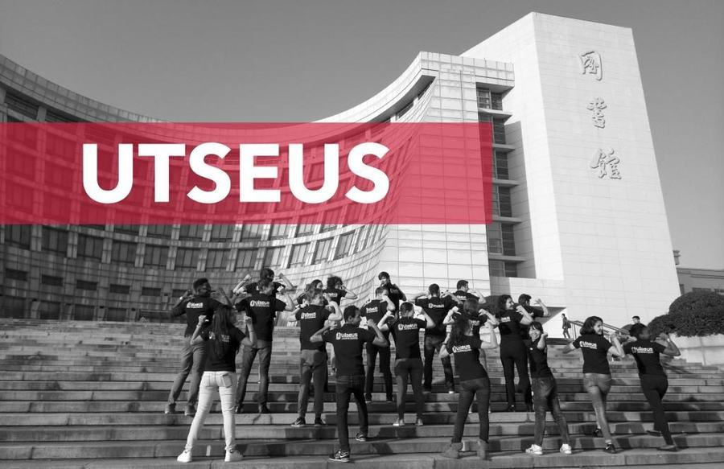
Your intake, on the library steps.
This guide is about Baoshan and Shanghai. The AFEC survival guide covers China as a whole — visas, apps, insurance, health, safety, culture — so anything true from Harbin to Kunming lives there rather than here. Scan the code.
AFEC guide
The university's own posters — campus map, canteen hours, the club list — are in the appendix at the back, and linked from the chapters they belong to.
UTSEUS tip: prices are what students paid in 2025–2026, and Shanghai moves fast — a restaurant can close within a semester. Check Dianping, and ask in the UTSEUS WeChat group.
Four people look after the UTSEUS side of your semester, each with a clear patch. Nobody uses email here — everything happens on WeChat.
Who does what
Fabien — Director of UTSEUSWeChat: Shangdaemon
5th floor · introduced at the welcome session
Heads the school. You meet Fabien at the welcome session rather than message him day to day — the person to go to when something serious needs unblocking.
Charly — Visas & SHU registrationWeChat: je_suis_charly
3rd floor · visas · registration at Shanghai University
Your visa and your SHU registration: the paperwork, the order, where to be and when. When this guide says a procedure changes every year, Charly knows this year's version. Police registration is yours to do once you move in (Chapter II).
Anything that could end up on your transcript: course choices, timetables, credits, exam dates and results. Also handles housing with Anicet.
Anicet — Student life & housingWeChat: aneysait
Office 504 · Head Student Coordinator · campus life · Shanghai · housing
A student here too, who has already made the mistakes you are about to. Settling in, the WeChat groups, outings, where to eat when the canteens wear thin — plus housing with Kay. Corrections to this guide come here.
Two WeChat groups every semester, and you belong in both: one for courses (timetables, rooms, exams — Kay's) and one for life (campus, Shanghai, outings — Anicet's). Announcements land there, so get added as soon as you arrive. Anything that fits nobody's job description, Kay and Anicet pick up.
Where to find them — the UTSEUS building 中欧工程技术学院, building 6 in the east zone, 333 Nanchen Road. Fabien 5th floor · Charly 3rd floor · Kay and Anicet office 504.
You land a few days before term starts, and almost everything that matters can be sorted before your first class. General formalities — visa, arrival card, insurance — are in the AFEC guide; this is the Baoshan-side plan. Your VPN is the exception: it is two chapters on, and it has to be done before you fly.
1 · Reaching the campus
Take a Didi. After ten hours of flying with a suitcase, the metro means a line change, stairs and rush-hour crowds. A Didi goes door to door: at most 230 RMB from Pudong (1 h 15–1 h 30), at most 120 RMB from Hongqiao (about 45 minutes). If someone from your intake lands around the same time, share the car.
By metro (7–9 RMB) it is Line 2 to Jing'an Temple, then Line 7 north — but the airports sit at opposite ends of Line 2, so you ride in opposite directions:
From Pudong (PVG), the eastern end: Line 2 westbound from 浦东国际机场 straight to Jing'an Temple静安寺 — no train change — then Line 7 north to Shanghai University上海大学. About 1 h 45.
From Hongqiao (SHA), the western end: Line 2 eastbound from 虹桥2号航站楼 to Jing'an Temple, then Line 7 north. About 1 h 15.
Line 2 — both airports, opposite endsLine 7 — north to the campusJing'an Temple — your only changeTwo campus stations on Line 7: Shanghai University上海大学站 (north gate) and Nanchen Road南陈路站
Book a few nights as close to campus as you can (search « 上海大学宝山校区 » on Trip.com): SIM, bank and getting your bearings are then all within walking distance. Most hotels register you with the police themselves, but not all — ask reception for the slip (临时住宿登记单) and check you have it before you leave.
3 · Then your flat, with UTSEUS
You will rent an apartment around the campus, and the search starts before you land. Kay and Anicet collect what you want — budget, size, sharing or not, how close to campus — and pass it to the estate agents they work with. Once you arrive, the agents contact you directly and show you the flats that match; from there it is between you and the agent.
So be precise at that first stage — it is what the whole search is built on — and say early if you want to share, because flatmates are matched then. Kay and Anicet are not in the loop for every visit and contract, but if anything goes wrong — a contract you do not understand, an agent pushing you, a flat that is not what was promised — call them. And know roughly what the deposit will come to: the next page explains why it is cash.
Then register with the police — this one is on you. Every foreigner must be declared at the address where they actually sleep, and the slip is your official proof of address: the bank, the university and your visa all ask for it. You have 24 hours from moving in — local police station or online here — the new slip replaces the hotel one.
4 · Use those first days
In this order: SIM card first — it needs only your passport (the SIM chapter) — then the bank, which needs a Chinese number (the bank chapter). Then explore, with the campus map and the neighbourhood map: the west gate food street, your nearest canteen, the metro exits, the supermarket. Everything is walking or cycling distance, so this is also the week to raid room A200 for the kit previous students left behind, and to get comfortable with Alipay, the shared bikes and Dianping, before coursework starts.
5 · Registration, once term starts
Registration at SHU happens only when term begins, and Charly organises all of it: paperwork, order, where to be and when. Bring your documents and follow the instructions. The campus card一卡通 — canteens and gates — comes the same way; what you can do with it is in the campus-card chapter.
UTSEUS tip: photograph every document as you get it — passport page, visa, registration slip, admission letter, student card. You will be asked for them far more often than you expect. And get into the two WeChat groups (Chapter I) the day you arrive.
The single biggest surprise of the first fortnight: landlords around the campus almost always want one month's deposit plus three months' rent up front — four months in one payment, on signing day. The agent gives you the exact figure once you pick a flat. You do not need to bring the money: you take it out of an ATM here. The one thing to do before you fly is raise your bank's overseas withdrawal limit.
Why it has to be cash
A foreign card on Alipay or WeChat pays merchants perfectly well — canteens, taxis, the supermarket. What it cannot do is send money to a person: those transfers need a Chinese bank account behind the app, and you will not have one for days.
Your landlord is a person, not a shop. So on signing day the money comes out of a cash machine, in notes, and that is simply how it is done here.
Getting the cash out
The machine limits each withdrawal, not your afternoon. Take the card out, put it back in, withdraw again — several rounds at the same ATM is normal.
The ceiling that bites is your own bank's. European banks cap withdrawals abroad per day or per week, and that cap is what stops you. Raise it in your banking app before you fly, and tell your bank you are going to China so the card is not blocked.
Spread it over a few days if your limit is low. Start withdrawing as soon as you arrive rather than the morning you sign.
Use the big-four ATMs — Bank of China (BOC), the Industrial and Commercial Bank of China (ICBC), China Construction Bank (CCB) and the Agricultural Bank of China (ABC): English menus, foreign cards accepted (branches near campus in the bank chapter). Your bank charges a fee each time, so take large amounts in few trips.
Carrying it: four months' rent is a lot of notes. Shanghai is very safe and this is routine, but split the withdrawals over a couple of days and keep the cash out of sight.
Once you have a Chinese account (the bank chapter), this all disappears: rent, splitting bills with flatmates, getting the deposit back — all in the app, instantly and free. The best argument for opening one in your first week.
This is the one item on the whole list you cannot fix once you have landed. Do it at home, on your phone and your laptop, and open it once before you leave.
You cannot download a VPN once you are here — the providers' sites are blocked and the Chinese app stores do not carry them. From inside China, Google, Gmail, Instagram, WhatsApp and most Western news simply do not load.
Install it, pay for it and sign in once, at home. Phone and laptop both.
Take two, from two different companies. Providers go down for days at a time.
What people here actually use
Astrill
≈200 RMBa month, no commitment
30 USD a month · about 1,000 RMB for a five-month semester
Stealth mode built for the deep-packet inspection that catches ordinary VPNs. Several times the price, and that is the argument.
Surfshark
≈110 RMBa month, no commitment
16.45 USD a month · about 550 RMB for the semester — its 12-month plan works out cheaper, near 270 RMB in total
The best value of the big names. Turn on NoBorders before you fly.
Mullvad
≈39 RMBa month, flat
5 EUR a month, cancel whenever · about 195 RMB for the semester
Same price since 2009, and you can stop after one month. Turn on bridges for China.
SakuraCat
≈9 RMBa month, and up
about 0.3 RMB a day · roughly 45 RMB for the semester · free tier to test
Not on iPhone or Mac — no iOS or macOS version yet. Sold by the day, takes RMB, free tier to try.
Do not arrive with these. The two names most people already have do not work here, and the old cheap favourite is gone: LetsVPN shut down in April 2026.
Everything you can do without leaving the gates: where to eat, where to study, where to see a doctor, where to swim, and the card that pays for all of it.
Two things to fix in your head on the first day: UTSEUS中欧工程技术学院 sits on the east side, by the Nanchen Road gate, and the metro is at the north gate. Everything else is keyed underneath. For every building with its number, open the university's official campus map.
NSDark squares — the gates.N north, where the metro is · E and E2 east, on the Nanchen Rd side · S and S2 south. The west gate is labelled in red instead: it is the food street, and the one you will use most.
L1L2Dark red circles — the libraries.L1 the main library, eight floors and the 24-hour room · L2 Qian Weichang, the round one by UTSEUS.
SPORTS ZONEPale labels — areas, not buildings. The sports zone fills the space between the two athletics tracks; tennis is the north-west corner; the innovation centre sits just south-east of the Shuixiu canteen; the football pitch is down in the J zone.
Six canteens, and each name puns on its number in Mandarin: 益新 yìxīn ~ 一 yī, 尔美 ěrměi ~ 二 èr, 山明 shānmíng ~ 三 sān, 水秀 shuǐxiù ~ 四 sì, 吾馨 wúxīn ~ 五 wǔ, 留韵 liúyùn ~ 六 liù. A meal costs 10–20 RMB on the campus card, and the green pins on the campus map show where they are. Hours below are the university's own — the full poster is here.
1 · Yixin 益新楼
West of the library
Floor
Breakfast
Lunch
Dinner
1F
6:00–10:00
10:00–13:00
16:00–18:30
2F
6:30–9:00
10:30–13:00
16:00–19:00
Tea room
—
9:00–20:30
9:00–20:30
Classic self-service downstairs; bibimbap, teppanyaki and curry upstairs, plus a tea room that also does pasta. Floor 3 is the smarter « reception » room, open to everyone.
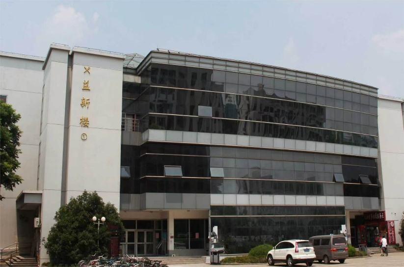
2 · Ermei 尔美楼
North of the pond, by the sports fields
Floor
Breakfast
Lunch
Dinner
1F
6:30–9:00
10:30–13:00
16:30–19:00
2F
—
10:30–13:00
16:00–19:30
3F western
—
10:00–13:30
16:00–20:30
The after-training reflex, with a terrace. Grilled dishes and bubble tea downstairs; floor 3 is the campus western restaurant — pizzas, and the latest service of any canteen.
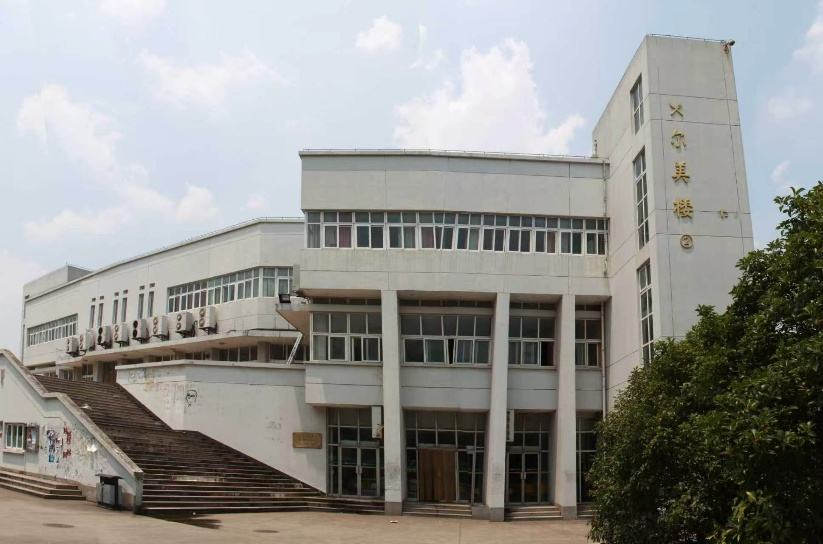
3 · Shanming 山明楼
Facing buildings O/I
Floor
Breakfast
Lunch
Dinner
1F smart
—
10:00–13:30
16:00–18:30
1F KFC
7:00–10:00
9:30–14:00
17:00–21:00
2F
6:30–9:00
10:30–13:30
16:00–20:00
3F
7:00–9:00
10:30–13:30
16:30–19:00
The anti-queue option: pay-by-weight canteen and a KFC on floor 1, Suzhou noodles and desserts on 2, north-western food on 3 — 大盘鸡, fried noodles, the most halal-friendly floor on campus.
Lunch between two classes, packed at exactly noon. Roast-meat rice 烧腊饭, hand-pulled noodles and malatang downstairs; dumplings, wontons and rice noodles upstairs.
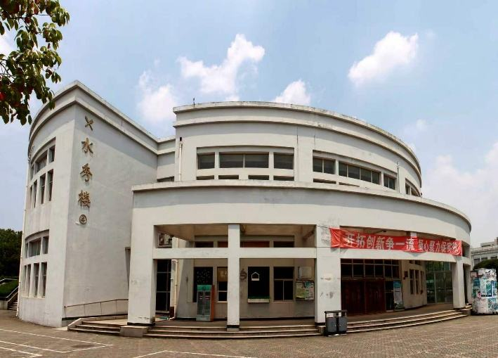
5 · Wuxin 吾馨楼
South zone residences
Floor
Breakfast
Lunch
Dinner
1F
6:30–9:00
10:30–13:00
16:00–18:30
2F
6:30–9:30
10:30–13:00
16:30–19:00
The only canteen inside a residential area, hence its nickname south zone canteen南区食堂. Dry pot and claypot rice downstairs, with a shop and a fresh-milk bar; dumplings and wontons upstairs.
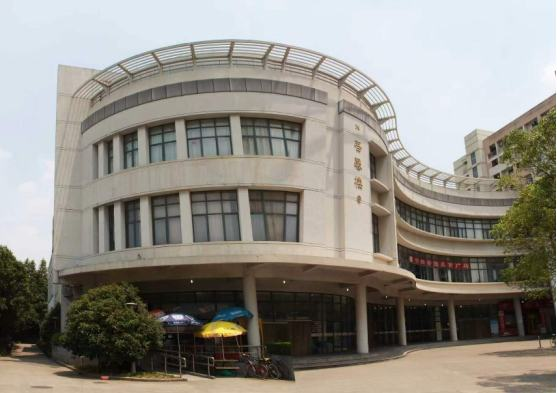
6 · Liuyun / East 留韵楼 · 东区食堂UTSEUS side
East zone, facing the Qian Weichang library
Floor
Breakfast
Lunch
Dinner
1F
6:30–9:00
10:30–13:00
16:00–18:30
2F
—
10:30–13:00
16:30–19:30
3F
—
10:30–13:00
16:30–19:30
Your canteen: two minutes from the UTSEUS building, across from the round library. Dry pot and rice noodles on 1, roast-meat rice and claypot chicken on 2, SHU's hongshaorou braised pork on the smarter 3.
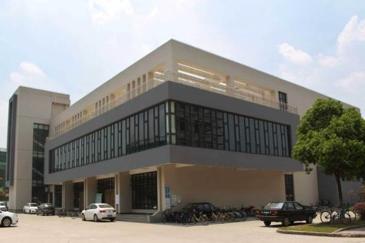
Chinese meal times are strict: breakfast 6:30–9:00, lunch 10:30–13:00, dinner from 16:00 and mostly over by 18:30. Turn up at 13:15 and the trays are empty. Late exceptions: Shanming's KFC until 21:00, Ermei's western floor and Yixin's tea room until 20:30, Liuyun's upper floors until 19:30.
The card pays the canteens, gets you onto campus and covers the paid services inside it (showers, printing, pool tickets). Four ways to top it up:
With Alipay — the easiest, if you have a Chinese card Search 支付宝校园卡 → add a card → « Shanghai University » → student number and name. Credited in minutes. Two catches: it needs a Chinese bank card (a foreign card linked to Alipay will not do), and the name must match your student card exactly.
With WeChat — on the campus network Official account 上海大学信息门户 → 校内用户 → Smart Portal 智慧门户 → log in → 账户充值. Only works on the campus network, so do it from campus Wi-Fi.
With SHU WeCom 企业微信to be confirmed Install WeCom, domain shuedu, log in → Workspace → Life Services → 校园卡一卡通.
In cash At the Yixin canteen益新食堂, a staffed counter left of the left-hand entrance takes your card and your cash. The only place on campus that takes cash — and the only route needing no Chinese bank card.
Autumn semester 2026
The semester opens on Friday 4 September with the opening ceremony; classes start on Monday 7 September · semester ends Sunday 10 January 2027. Two public holidays fall inside it: Mid-Autumn on 25 September and Golden Week from 1 to 7 October — the whole country travels then, so book early or stay put.
Block
Periods
Runs
Morning
1–4
8:00 – 11:40
Afternoon
5–8
13:00 – 16:40
Evening
9–12
18:00 – 21:40
Twelve periods of 45 minutes a day. Yes, the first one starts at 8:00 sharp.
Timetables, course choices and exams are Kay's territory (Chapter I).
What the card looks like
One card doing two jobs: it proves who you are and it pays for things. The student number printed on the front is the one the SHU account form, the bank and the libraries all ask for.
One password unlocks both. You can only set it once you have your student card — the form asks for the number printed on it.
1 · Set your password
Go to newsso.shu.edu.cn and click Self-Activation. The form asks for four things:
Field on the form
What to type
Student/Staff ID
your student number, printed on your student card
Full Name
exactly as written on the card
ID Number
your passport number
Password
one you choose — this is the password you are creating
The next page asks you to link a phone number, and it has to be a Chinese one — a foreign number will not be accepted. Get your SIM first (the SIM chapter).
Two more things worth knowing
Lost or demagnetised campus card: self-service reissue machines under building D, on the 6th floor of building A and in the one-stop service hall. Anything else: the info desk on the ground floor of building D.
2 · Get on the campus Wi-Fi
Two networks, and the difference matters:
SHUWlan-1X — the one to use. Username: your student number, password: the one you just set. Connect once and your phone and laptop stay on it; you never log in again.
SHU (For all) — the fallback if SHUWlan-1X refuses you. It works, but it drops you every so often and makes you sign in again, so treat it as the spare.
Three steps, and the first one covers most of it: a pharmacy when it is minor, the campus clinic when it is more than that, the English-speaking hospital when it is serious. And whenever it is serious — an injury, an illness that worries you — tell Kay or Anicet.
What to actually do
Minor — a cold, a sore throat, a headache, an upset stomach: go straight to a pharmacy药店. Show them the problem, buy it over the counter, done. Out of hours, Meituan delivers from a pharmacy in about 30 minutes (the daily-life chapter).
More than minor — it is not going away, it needs looking at, you need a prescription or a certificate: the campus clinic校医院 at the north gate. It is on your doorstep, it is cheap, and it is the only route to being reimbursed. Consultations are in Chinese, so bring a Chinese-speaking friend or a translation app.
Serious — a fracture, a fever that will not break, anything needing a scan, anything frightening: the international hospital on the back page. Staffed in English, open 24 hours, 30 to 40 minutes by Didi.
And message Kay or Anicet (Chapter I) any time you are hurt or properly ill — not only when you cannot decide. They will help you get seen and deal with the paperwork afterwards, and they would far rather hear about it early than late.
If you are going to miss a class, tell them as soon as you know — with a photo of something proving it if you have one, a clinic slip or a prescription. They pass it on to the lecturer concerned so the absence is recorded as illness. Message the lecturer yourself as well: that part stays your responsibility, and it is what stops a no-show being marked against you.
North gate 北门, next to the medical school · just inside the campus from the metro
On paper it covers a great deal, and cheaply: general medicine and surgery, dentistry, Chinese medicine, ENT and ophthalmology, gynaecology, dermatology, plus a lab, ultrasound, ECG and radiology on site.
The catch: consultations happen in Chinese. It is manageable — a translation app and a bit of patience get you through — but do not expect English, and if you can bring a Chinese-speaking friend, bring one.
Opening hours: published every Monday on the 上海大学学生会 WeChat account — slots vary by department.
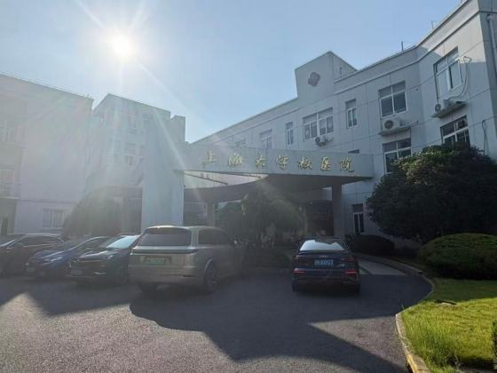
The one reason to come anyway: getting reimbursed — the 转诊单 rule
The clinic is the only door to the university insurance, so if you expect a large bill and can bring a translator, it is worth the trip. See a doctor there first; if needed they issue a referral slip (转诊单) for a designated hospital — Huashan North, Tongji, Shanghai Tenth or Sixth People’s.
Reimbursement: above a 300 RMB annual deductible — 70/60/50 % by hospital tier. A slip lasts one week and covers one visit to one department. Exceptions: emergencies and the holidays.
Both open 8:00–22:00 during term, both entered with your campus card, and a book borrowed in one can go back to any of the three SHU libraries.
Main library 校本部图书馆
East of the Yixin canteen, facing the sunken plaza · close to the teaching buildings
Eight floors, study desks and power sockets throughout. Two things matter: the 24-hour study space on the ground floor and the bookable study rooms研习空间. Printing on floors 5 and 8, main desk on floor 2.
Booking the 24-hour spaceto be confirmed: WeCom 企业微信 → Workspace → 24小时自修区预约, then pick area, seat and time. It only works on the campus network, so book it while you are on campus.
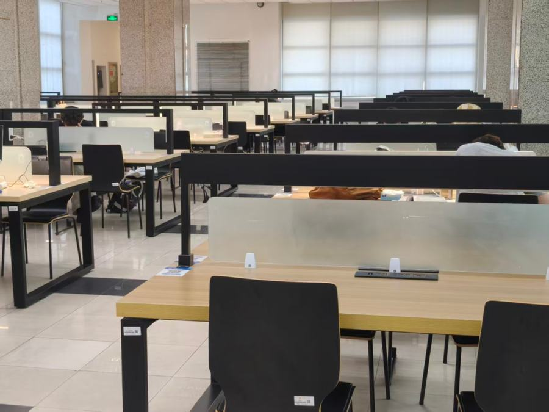
The service desk lends umbrellas爱心伞 — free, on the second floor. Remember it the first time a Shanghai downpour catches you between buildings.
Qian Weichang library 钱伟长图书馆UTSEUS side
East zone, across from your building · the round one
Library and museum in one spiral: 1–2 the SHU museum, 3 the Qian Weichang memorial, 3–4 open stacks, 5 special collections, 6 discussion rooms, 7 reading space. Over 800 seats, face-recognition entry, self-service printing.
Seats are booked, not takento be confirmed: the day's system opens at 7:00 in WeCom → Workspace → 图书馆座位预约. Then 签到 check in, 暂离 if you step out, 退座 when you leave — skip those and you collect a no-show.
Walk in through the west gate and the first thing you meet is a short commercial strip — the campus high street, and the answer to most small daily needs without leaving the grounds.
Education supermarket 上海教育超市Shànghǎi jiàoyù chāoshì→ open in maps
Opposite the west gate basketball court
The everyday bazaar: toiletries, snacks, cleaning things. Next door, M&G晨光文具Chénguāng wénjù for notebooks and pens; hidden at the back, a second-hand bookshop where you can buy — and sell back — your books. Campus card, WeChat or Alipay.
Luckin瑞幸咖啡Ruìxìng kāfēi — order in the app, collect in two minutes, a third of what Starbucks charges. Mixue蜜雪冰城Mìxuě bīngchéng for 4–10 RMB bubble tea, 芯茶Xīn chá next door, and a bakery for the 8 a.m. emergency.
The rest of the strip
The fruit stand尚大果品Shàngdà guǒpǐn, where apples or seasonal mangoes cost a few yuan a jin. 加宋图文Jiāsòng túwén for printing and binding, 8:00–22:00. And an optician佳视眼镜Jiāshì yǎnjìng — genuinely useful if you break your glasses two weeks in.
Elsewhere on campus
A convenience store 飞牛便利Fēiniú biànlì in the east zone near UTSEUS, and in the south residences a 7-Eleven with a fruit shop and their own Luckin.
Inside the canteens
Yixin, Shuixiu, Wuxin and Liuyun each have a small shop on the ground floor — drinks, snacks, the thing you forgot between two classes.
Shops here turn over from year to year — this is what the campus maps show at the time of writing.
Free stuff, room A200: once you have moved into your flat, go up to the second floor of the UTSEUS building and find room A200. It is a storage room where every previous intake left behind what they could not take home — kettles, bedding, lamps, pans, drying racks, the things you would otherwise buy in your first week. Take whatever you need. Go early in the semester: the good things go fast.→ open in maps
Print shops 加宋图文 (near the west gate) — 8:00–22:00 婧美图文 — across the road from the south gate, on Micheng commercial street, building 24, 2F — 7:30–22:00
Self-service print machines
Card-operated printer-copiers dotted around campus: print, copy and scan without going to a shop, at any hour the building itself is open — evenings, weekends, the night before a deadline. They take nothing but the campus card: no cash, no phone payment. Check your balance before you count on one (topping up).
Baoshan is one of the best-equipped campuses in Shanghai, and Line 7 is your sports corridor for everything else. Booking runs through WeChat, and needs your SHU login; the campus card gets you through the door. So sport starts once you are registered (the campus-card chapter). Everything named here is numbered on the sports map two pages on.
Indoors 室内
The gymnasium 体育馆campus card
North of campus, near the east gate
Attached to the pool and the training hall · facing the Weichang building
A 4,200-seat arena, and badminton is what it is used for: 15 courts, the number-one booking on campus, so reserve a day or two ahead in WeChat. Basketball, volleyball and floor hockey also share the ground floor; upstairs, fencing north of floor 2 and taekwondo south, with the gymnastics studios in T101, T115 and T145 — pilates, yoga, dance.
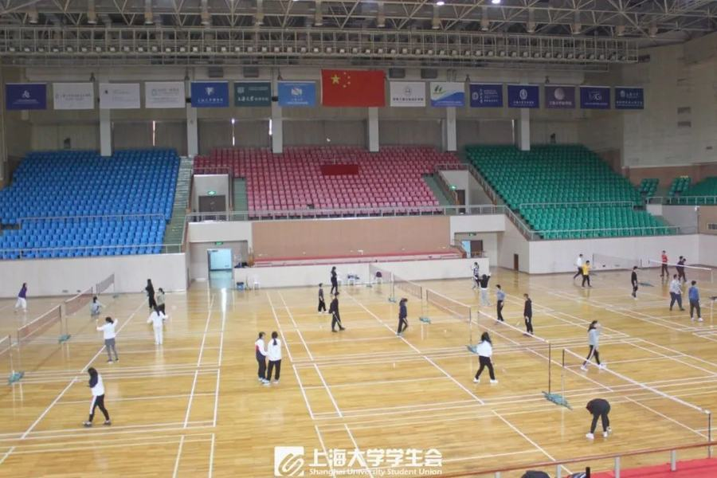
The training hall 训练馆
Next door to the gymnasium
Room X101 is the table-tennis hall: 32 tables, and one of the most popular places on campus outside class hours — turn up and someone will play. Rooms X106 and X107, inside it, are dance studios with mirrored walls.
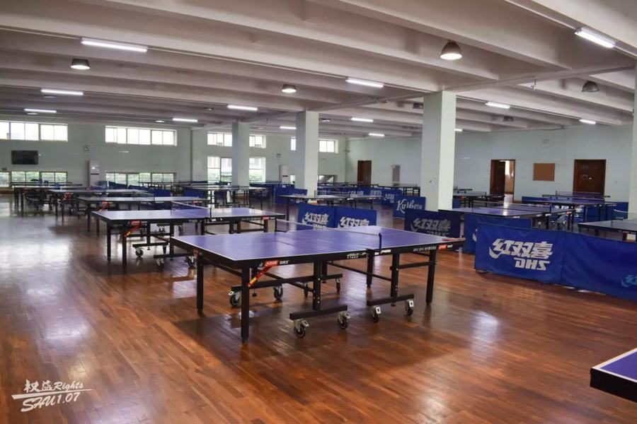
The pool 游泳馆10–25 RMB
Between the gymnasium and the athletics track
Two pools: the small one is normally closed to students. You swim in the big pool, whose 1.2 m shallow half is open to everyone — the 2 m deep half is for classes, the swim team and supervised sessions. Swim caps are compulsory, as in every Chinese pool.
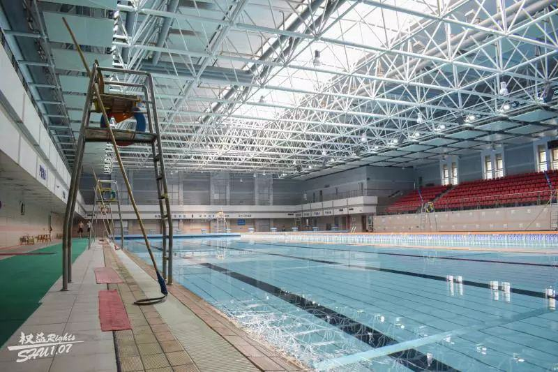
Booking a courtto be confirmed Campus venues are reserved in WeChat, through the same WeCom企业微信 Workspace that holds the library seat booking (the libraries chapter) — look for 场馆预约. Badminton goes first, so book a day or two ahead.
Nothing is lent, anywhere. No rackets, no balls, no swim caps — not at the gymnasium, not at the pool, not on the outdoor courts. Buy your kit in your first week: the campus supermarket and the west gate shops cover the basics, Taobao and Meituan the rest (the shopping chapter).
Every place named here is numbered on the sports map on the next page, zone letters included.
Basketball 篮球场
Six courts: B zone and the covered C-zone court in the north — which also shelters a volleyball court and a climbing wall — G zone west, H and J zones south, plus the indoor one. Turn up with a ball around 17:00–19:00 and you will be waved into a 半场 game.
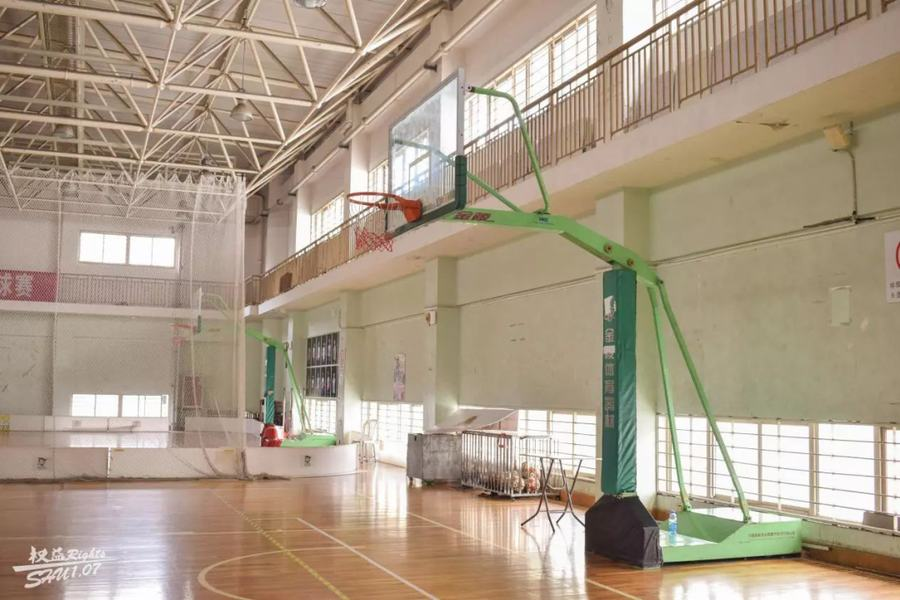
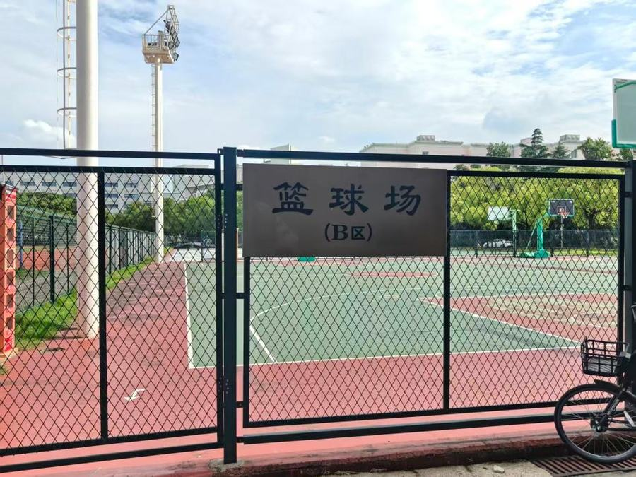
Football 足球场8:00–18:00
Three pitches: two inside the northern athletics tracks, and the J-zone pitch in the south — north of the New Century footbridge — which is where students actually play. Hours shift with the seasons.
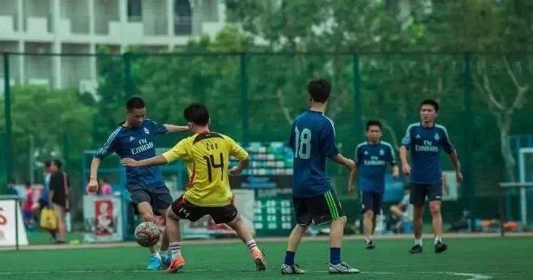
Tennis 网球场
Twelve outdoor courts in the north-west corner (E zone), through the gate facing the Xuanling hall or the one shared with F zone. The indoor 玄陵网球馆 has two courts, but needs a card and is mostly for teaching and the university team.
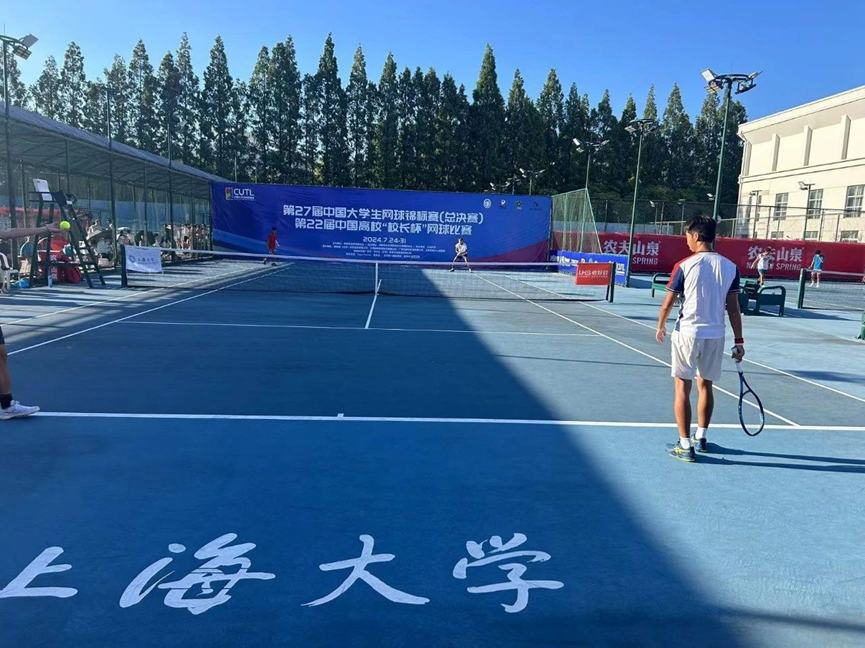
The track 田径场
From 18:00 the 400 m track becomes the social hub of the evening. Football pick-up games are organised in WeChat groups — ask your buddy to add you.
Sport at Baoshan happens in three places: the north complex around the two athletics tracks, a strip of courts down the western wall, and the J zone in the south, past the pond. Nothing here is more than a fifteen-minute walk from anywhere else on campus.
SHU has 111 student clubs, and they are the easiest way to meet Chinese students. Know what you are walking into: the members are almost all Chinese and the club runs in Chinese. Some will speak English, many will not, and nobody switches language for the session. Pick one where the activity does the talking — a sport, an instrument, a game — and it matters far less than you fear. The full directory, translated with every group number, is this spreadsheet, also in the appendix.
The catch, and it is a real one: clubs organise on QQ, not WeChat, and the numbers in the directory are QQ group IDs. Creating a QQ account needs a Chinese phone number — so sort your SIM out first (the SIM chapter), or ask a classmate who already has one to sign you up and add you to the group.
The way round it, and what most exchange students use: the casual crowds — pick-up football, basketball and badminton, running and hiking — never bothered with QQ and run WeChat groups instead. No Chinese number, no second app. Message Anicet (WeChat aneysait) to be added to the ones alive this semester.
What is on offer
Sport & outdoors27 clubs
Basketball, football, tennis, volleyball, badminton, table tennis, ultimate frisbee, skateboarding, roller skating, cycling, climbing. Turning up is the whole membership process.
Music, arts & performance22 clubs
Street dance, two choirs, an original-songwriting club, musical theatre, hip-hop and rap, plus the e-sports crowd (LoL, Valorant, CS) who count as performers here.
Science, tech & robotics22 clubs
RoboMaster combat robotics (new for 2026), an AI club, open-source and Linux, RC aircraft and FPV drones, mathematical modelling, chemistry, astronomy. If you are here on an engineering exchange, this is your natural habitat.
Culture, languages & hobbies24 clubs
Start here. The Chinese & International Student Exchange Association中外学生交流协会 · GHA exists precisely for you: language partners and mixed events. The English Association runs a conversation corner where Chinese students come to practise — the other easy door. Also Japanese, Mandarin and pronunciation clubs, Shanghainese dialect and city walks, calligraphy, seal carving, kite making.
Find the club in the directory, note its QQ group number, search that number in QQ and request to join. Most groups accept students without ceremony; some ask a question or two — in Chinese, so keep a translation app open. Term start is when everyone recruits, so the first two weeks are the moment to move.
The streets on the other side of the gates, all of them walking or cycling distance: your SIM and your bank, where to eat and drink, where to train, where to buy everything else.
Seven places, and between them they hold almost everything in this part of the guide — where you eat, drink, train and shop. Each one is listed below with what it holds.
Deliberately not on this map: the phone shops and banks, which have their own map with the door numbers you will need. The food and gym maps show the same places in more detail; everything inside the gates is on the campus map.
Your phone number is your digital identity in China. It is essential for opening a bank account, ordering on Taobao, or registering for bike-sharing apps.
The three options near campus
China Unicom — Jufengyuan Road 中国联通 聚丰园路营业厅recommended→ open in maps
155 Jufengyuan Rd · 5 min walk from west gate · ~9:00–17:30
The closest official store to campus, used to SHU students. Unicom is the simplest operator for foreigners: best compatibility with European/foreign phones.
China Telecom — Jufengyuan Road 中国电信 聚丰园路营业厅→ open in maps
329 Jufengyuan Rd · 10 min walk from west gate · ~8:30–18:00
The cheapest of the three operators. This branch is very convenient as it is located on the same street as China Unicom, just a few minutes walk away. Ideal for comparing.
China Mobile — Jufengyuan Road 中国移动 聚丰园路营业厅→ open in maps
189 Jufengyuan Rd · 15 min walk from west gate · ~9:00–17:30
Small official agency (Dachang M-Zone). Very convenient as it is located on the same street as the Unicom branch.
Budget for a semester: 19 to 59 RMB/month. Ask for prepaid with no contract: 预付费，无合约 — and refuse the 12–24 month contracts they will automatically offer you.
Keep the number active all semester: a prepaid number with zero balance is suspended then recycled (~90 days) — and with it goes your access to WeChat Pay and your bank. Do small regular top-ups via Alipay.
When leaving: cancel in-store (销号) before leaving. Remember to change your phone number on WeChat and Alipay to your home country number.
UTSEUS tip: come with a Chinese-speaking friend or a UTSEUS buddy — passport registration takes time and the staff in these neighborhood shops rarely speak English.
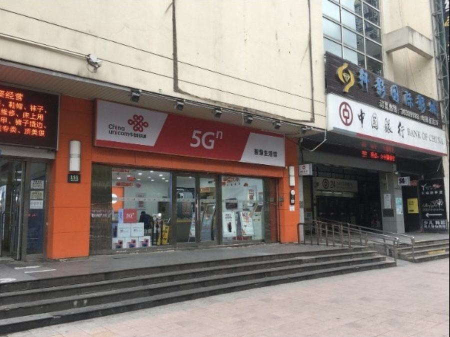
What you are looking for: the China Unicom shopfront on Jufengyuan Rd, a few doors from the Bank of China. Walk in with your passport.
A travel eSIM bought at home covers the gap between landing and the SIM shop — and it has one useful side effect: it roams onto a foreign network, so Google and WhatsApp work through it with no VPN at all.
An eSIM from home is data only, live the moment the plane doors open. A Chinese SIM is a +86 number — what the bank, Alipay, Taobao, the bike apps and your SHU account all check. You want both: the eSIM covers the first days, the number runs the semester (the previous chapter).
Buy a small one, and check at home that your phone takes an eSIM and is not carrier-locked.
Leave the physical slot empty for the Chinese card, and run both at once.
If you are with Free, look here first
logo
Free Mobile
includedin the plan you already pay for
Forfait Free 5G 19.99 EUR a month — 35 GB abroad, 115+ destinations · Free Max 29.99 EUR, or 19.99 with a Freebox — unlimited abroad, 135+ destinations
China is on the included list, and the data routes through France — so Google and WhatsApp work on it with no VPN, the same trick as the eSIMs below but on the SIM you already have. It is what most French people here run on. Check China is on your own plan before you fly, and turn roaming on.
It still gives you no Chinese number, and it is built for trips rather than living abroad — so it does not replace the +86 card.
If you are not, buy one of these
All four route your data out of the mainland — that is what makes Google and WhatsApp work through them with no VPN.
Provider
Plan
Price
Worth knowing
Nomad
5 GB · 30 days
≈90 RMB13.50 USD
Runs on both China Unicom and China Telecom, so it holds a signal where the others drop one.
Saily
5 GB · 30 days
≈100 RMB14.99 USD
The most consistent of the four at getting round the firewall in testing.
Airalo
5 GB · 30 days
≈105 RMB15.50 USD
The best known, and the easiest to buy. China Unicom only. 10 GB is about 180 RMB.
Holafly
unlimited · 7 days
≈185 RMB27.50 USD
Unlimited, but the hotspot is capped near 1 GB a day and there are no top-ups.
Turn data roaming on, and leave it on. It is the one setting everybody switches off abroad out of habit, and on a travel eSIM it is the whole trick: with roaming off the data never leaves China, and the firewall is back. It costs you nothing — the plan is prepaid.
Currency, cards and Alipay/WeChat with foreign cards are in the AFEC guide; here are the branches around campus. Open your account as soon as you have your SIM and your registration slip. All four banks have English ATMs that take foreign cards.
The four major banks near campus
Bank of China — Qilianshan Road 中国银行祁连山路支行SHU partner→ open in maps
165 Jufengyuan Rd · 5 min walk from the west gate · ~9:00–17:00
The branch cited in the official SHU international student handbook: they process foreign students all day and the staff is used to passports. By far your best chances.
Thirty minutes instead of two hours: pre-fill the application on WeChat.
Ask the staff for the account-opening QR code.
Scan it, choose the « Foreigner » profile, upload a photo of your passport.
Pick the Qilianshan Road branch (祁连山路支行).
China Construction Bank — Jinqiu Road 中国建设银行锦秋路支行→ open in maps
Jinqiu Xintiandi, 809 Jinqiu Rd · 10 min walk · ~9:00–17:00
The closest large bank to the Jinqiu/Nanchen area. Opens accounts for foreign students. Their ATMs accept foreign Visa/Mastercard.
458 Jufengyuan Rd · 15 min walk from the west gate · ~9:00–17:00
Very close to the west gate. Excellent alternative if Bank of China is too busy.
Agricultural Bank of China — Jinqiu Road 中国农业银行（锦秋路716号）→ open in maps
716 Jinqiu Rd · 20 min walk from the west gate · ~9:00–17:00
Small neighborhood branch, also walking distance — but small branches sometimes send foreigners to a larger main branch.
Documents to bring — all of them, every time
Passport + visa page (and a photocopy of each)
SHU Admission Letter
Residence Registration Form 临时住宿登记单 (must be requested at your hotel reception; if you are in an apartment, you must register online here)
Active Chinese phone number — mandatory, everything is verified via SMS
~100 RMB in cash to activate the card (issuance fee 0–20 RMB)
At the counter, if asked why: 校园卡充值 (top up campus card), reimbursements, and daily expenses. Keep it simple, study-related.
Why a Chinese account is worth it: a foreign card on Alipay/WeChat covers daily life in Baoshan (no fee up to 200 RMB a transaction), but you cannot receive money with it — hongbao, your deposit coming back, a transfer from a friend. That is the reason to open one; link it to Alipay and WeChat the same day.
End of semester: empty or close the account before going home (passport + card at any branch of the bank) — a dormant account is a hassle to manage from abroad.
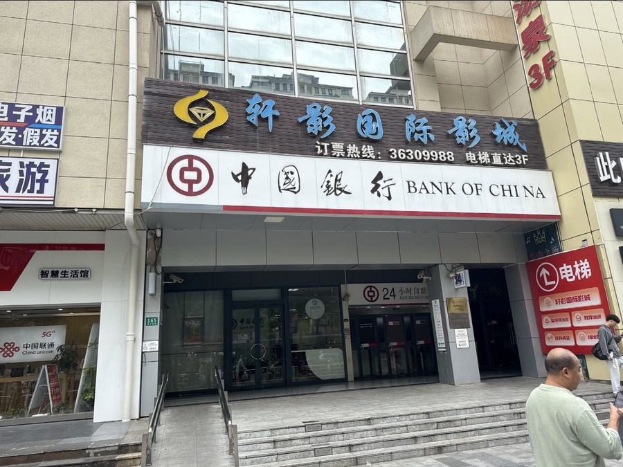
The Bank of China branch on Jufengyuan Rd — the cinema sign above it is the landmark. The 24-hour ATM lobby is on the left.
Everything this guide sends you to is within a 20-minute walk of the west gate. All three operators and two of the banks line Jufengyuan Rd, which runs west from the gate; the other two banks are up on Jinqiu Rd to the north.
One trip does both: Unicom (155) and Bank of China (205) are eight metres apart on Jufengyuan Rd, so you can get your SIM card and open your account on the same walk — exactly the order the SIM and bank chapters recommend.
Baoshan is not a trendy neighbourhood — which is good news: everything is student-priced. Five places to know, a full meal for 15–35 RMB, and a group dinner for 80–130 RMB a head — all of them on the map on the next page.
West exit of campus, Nanchen Rd / Shangda Rd side · 5–10 min walk
Maps call it « Hongji Plaza »; every intake calls it « the west gate ». Open 24/7, facing New Century, and the food street for SHU students: malatang, chuanchuan skewers (鸿基歪串串 is a classic), Korean tteokbokki hotpot, stone-bowl bibimbap, fried snacks and a row of bubble tea shops. Stalls change every semester — follow the queues. Busiest 17:30–21:00.
West side of campus · 10–15 min walk, 2 min by bike
The most complete street: home-style Chinese, Korean, Japanese, hotpot, barbecue, KTV and a cinema. The default answer to « shall we go out for dinner? », with places that stay open late.
The habit to build: open Dianping on 聚丰园路, sort by rating, and buy the 团购 set menu (20–30 % off) before you sit down.
A neighbourhood street with a supermarket, fruit shops and the malatang 汆悦麻辣烫: you fill your own bowl (vegetables, tofu, noodles, meats), pay by weight and choose the broth and spice level. The most vegetarian-friendly format in China.
Opposite the south gate, the closest to the teaching buildings
Restaurants, cafés, bubble tea and entertainment: the quickest option when you come out of class and don't want to cross the whole campus to the west gate.
One stop north on Line 7, or fifteen minutes by bike
Go straight down to the basement: that is the food floor and the reason to come — a food court plus chain restaurants, including the nearest Haidilao and a Korean barbecue (group dinners). The shopping floors above are half-empty; ignore them.
The classics worth knowing
Lanzhou halal noodles 兰州拉面 · 清真
Several shops in the gate streets · 15–22 RMB
Hand-pulled beef noodles, green signs, halal (清真), fast and open late. On campus, floor 3 of the 山明 canteen is dedicated to north-western flavours (the canteens chapter).
Shaxian Snacks 沙县小吃
In the gate streets · meal under 20 RMB
The national budget chain. The classic combo: peanut-sauce noodles plus wonton soup (拌面 + 扁肉) for about 13 RMB.
Bubble tea everywhere 蜜雪冰城 · 一点点 · 霸王茶姬
Hongji, Jufengyuan Rd, the malls · 4–22 RMB
Mixue (red snowman logo) is rock-bottom cheap, Yidiandian the student classic, Chagee the smarter version. Vocabulary: 少糖 less sugar, 去冰 no ice, 珍珠 tapioca pearls.
Late-night skewers 烧烤
Gate streets, 21:00–01:00 · 25–40 RMB a round
Post-library shaokao: lamb, chicken wings, tofu and enoki mushrooms over charcoal. A big bottle of local beer is 8–12 RMB. Saying 撸串 (lū chuàn) will amuse your Chinese classmates.
Five destinations, one per direction: two west of the gate, one at the metro, one at the south gate and one a stop up Line 7. Nothing here is more than fifteen minutes by bike.
Jingwei Hui, building 5, floor 4 · one metro stop · 10:00–07:00
China's most famous hotpot chain, and the ideal first group dinner: legendary service, picture-and-English menu on a tablet. Ask for 鸳鸯锅 yuānyāng guō, the half-spicy half-mild pot. Book in the app or arrive before 17:30 at weekends, or queue an hour. Student discount at some hours — ask, with your SHU card.
Korean BBQ 韩式烤肉60–100 RMB
Two of them at Jingwei Hui and the west gate
At Jingwei Hui: Hangongyan韩宫宴炭火烤肉, 99 Jingdi Rd, building 1 no. 5, 2F, rooms 205–206 · 10:00–22:30→ open in maps
At the west gate: Zhenghan正韩 (9 Jufengyuan Rd lane, no. 17, until 23:00) and Zaihancheng在汉城 (no. 50, until 02:00)→ open in maps
Baoshan Life Hub 宝山日月光Dachang Town · Line 7→ open in maps
1933 Hutai Rd · 350 m from Dachang Town station, exit 1 · 10:00–22:00
When Jingwei Hui has worn thin too: more chains, more floors, livelier in the evening. Food court 25–45 RMB, sit-down 50–90 RMB.
Delivery, campus edition
Meituan and Eleme (see the AFEC guide) deliver to campus in 30–45 minutes for 2–5 RMB. The SHU catch: couriers cannot come in — collect from the delivery shelves (外卖架) at the nearest gate when the courier messages you. Find your shelf on the first order.
Chinese meal times: lunch 11:30–12:30, dinner 17:30–19:00. Many small places close at 21:00 — after that it is skewers, convenience stores (FamilyMart/Lawson hot counter) and delivery.
Vegetarians: learn 我吃素 (wǒ chī sù); at malatang, ask for the clear broth 清汤 — standard broths are usually bone-based.
Cash is nearly useless: everything is paid by Alipay/WeChat QR code, even the skewer stall.
UTSEUS tip: the streets (Hongji, Jufengyuan, Jinqiu) are stable, but individual shops turn over every semester. Before crossing town for one specific address, check on Dianping that it still exists.
Let's be honest: Baoshan is not a party district. Within walking distance you get student bars and KTV, which is plenty for a weeknight; for a real club, Line 7 runs straight downtown (the nights-downtown chapter).
The cheap student bar, and there is one right at the west gate — long shared tables, 10 RMB shots, an international crowd, open until three. The obvious first night out, and the usual warm-up before anyone goes downtown. Bottom-shelf spirits: eat first, pace yourself.
The bar inside the west gate building itself — up the stairs above the food street, so it stays open when the stalls below have packed up.
At Jingwei Hui 经纬汇
Wanshou to be confirmedthe pick of them
In the mall at Nanchen Rd station · one metro stop
The best bar around the campus, and worth the one stop on Line 7 rather than settling for the west gate. If it is full, the mall holds three more — see below.
More bars, if those are full
Xianpi 30 km 鲜啤30公里酒馆craft beer
Hongji Plaza, no. 9–39 · 10:30–02:00
The craft-beer option at the west gate, in the same plaza as TYT and open from mid-morning.
Gongye homebar 宫野
Jingwei Hui, building 6, 3F · 20:00–02:00
Small and late, the quietest of the mall's three.
Yejing 夜境酒吧
Jingwei Hui, building 7, 2F · from 14:00
Opens in the afternoon, so it works for a drink that is not a night out.
Flywheel 飞轮民谣酒吧live folk
Jingwei Hui, building 7, ground floor · from 18:00
A folk-music bar with someone playing most evenings — the one to pick if you want to hear something rather than shout over it.
KTV — the rite of passage 纯K · 魅KTV · 星聚会
Baoshan and along Line 7 · from 40–80 RMB a room in the afternoon
The Chinese group night out: private room, touchscreen catalogue with international songs, drinks to the door. Friday prime time is about 298 RMB for three hours — split six ways, nothing. Always book the 团购 deal on Meituan; the walk-in price can be double.
Upstairs in the west gate building itself, so it is the one you pass every time you go out to eat — and the only one here that publishes a single-visit price.
The second branch of the west-gate chain, and the only round-the-clock option on this side of campus. It sits next door to Qihang — pins 6 and 7 on the gyms map — so one walk covers both.
Ten minutes past Jingwei Hui. A second site, 花舟, sits further east on the same road.
What it costs — Leke 乐刻运动 is the only one that publishes
The standard monthly card is 239 RMB, but almost nobody pays that at first: new members usually get a first month near 99 RMB, and the Meituan and Douyin new-user deals run 69–99 RMB. No contract, you pay month by month in the app, and the membership works at any Leke in the country — including the one by Gucun Park. Group classes are included. For the others, expect roughly 300–600 RMB a month and ask at the desk; they negotiate.
Before you join anywhere: buy a single day pass on Meituan (usually 20–40 RMB) and go once at the hour you would actually train — a gym that is empty at 15:00 can be unusable at 19:00. And never prepay a year at a small independent gym: they do close, and the money does not come back. Remember the campus gymnasium and pool cost a fraction of any of this (chapter VIII).
Four of them line Jufengyuan Rd between the west gate and Qilianshan Rd, so if you live on that side you can walk into all four in one afternoon and pick. The rest are spread one or two per gate.
Four addresses, four different reasons to go: a pool and racket courts, a park to run in, a climbing wall, and classes you pay for one at a time with no membership.
Dachang Sports Center 大场体育中心swim · badminton · squash→ open in maps
2010 Hutai Rd · Line 7 → Xingzhi Rd, then 800 m
The district's public complex: heated indoor pool (~30–50 RMB, ~20–30 concession), badminton (30–60 RMB/h), squash, table tennis, billiards, fitness trail. Plan B when the campus courts are full, and one of the few squash options around. Book pool slots by name through the 上海体育 WeChat account or the 随申办 app; weekend evenings go three days ahead.
Line 7 towards Meilan Lake → Gucun Park (~10 min), exit 5
Shanghai's largest suburban forest park, and the best long-run terrain near campus: kilometres of shaded paths around a lake, bikes for rent. Packed for the spring cherry blossom festival (16,000 trees), quiet the rest of the year. Open 6:00–18:00.
Jinfeng Climbing 尽峰攀岩boulderingChangshou Rd · direct→ open in maps
189 Changshou Rd, 189弄 mall, 5F · Line 7 direct, ~25 min · 11:00–22:00 weekdays, 10:00–21:30 weekends
Bouldering on your own metro line, no transfer: Changshou Rd is a Line 7 stop, and the wall is on the fifth floor of the mall above it. Beginners welcome without certification; shoes rent for a few yuan on top of entry. Busy on weekend afternoons; a weekday evening is quieter.
Daning / Jing'an, Line 7 towards the centre · 69–159 RMB per class
Pay-per-class group fitness with no membership: HIIT, boxing, spinning, dance, yoga — booked in the WeChat mini-program. For cheaper yoga closer to campus, search 瑜伽 on Dianping around Dahua: trial classes go for 19–39 RMB on Meituan.
Worth knowing
Pools: swim caps are compulsory everywhere (15 RMB on Taobao); deep-water zones sometimes require a 深水证shēnshuǐzhèng certificate or a short swim test — otherwise stay in the standard lanes.
Running:Strava works here — no need for a Chinese app. August and September are brutally humid, so locals run after 19:00; check the AQI before a hard session outdoors.
Beware of memberships: the big traditional chains (Will's and others) have been closing clubs since 2024 and prepaid cards are hard to refund. Monthly or pay-per-class, never annual.
Everything is either walking distance or one metro stop away, everything is cheaper than downtown — and whatever is missing arrives at your door within a day or two via Taobao.
Groceries
Campus supermarkets 校内超市
Next to the dorms and canteens
Your first stop on day one: water (2 RMB), instant noodles, toiletries, hangers, a bucket, a power strip. Subsidised prices, often cheaper than outside.
Leave New Century 新世纪大学生村, turn left, five minutes — it's on your right
Imported food, cheese, meat — but it is a paid members-only warehouse club, sold by the year and by the crate. Most students never join, and do not need to: Lianhua and the campus supermarket cover the week. Worth it only if several of you share one card and shop together.
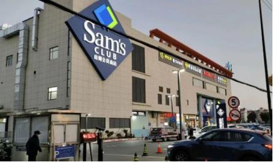
Hema / Freshippo 盒马
Delivery in 30–60 min through the app
Good fruit, ready meals, some imported goods — order in the app rather than trekking to a store (the nearest are in Dahua).
METRO at the Life Hub 麦德龙会员店to be confirmed→ open in maps
B1 Baoshan Life Hub · membership ~199 RMB/year
Cheese, charcuterie, wine, European products. Like Sam's Club it is members-only and paid yearly, so it is worth it only for a group who will shop together — and Amap no longer lists it at the Life Hub, so check before making the trip.
The malls
Baoshan Life Hub 宝山日月光中心Dachang Town · Line 7→ open in maps
Direct access from metro exit 1 · Line 7
THE mall for SHU students: 175,000 m² of restaurants, a cinema (40–60 RMB through Meituan), karting, a trampoline park, fashion chains, MINISO and the METRO store downstairs.
Most basics need no prescription — show the pharmacist your translation app, or a photo of the packet you use at home, and they will find the equivalent. Sick at 2 a.m.? Meituan delivers from pharmacies in 30 minutes.
Bedding & day-one kit
Taobao (48 h) · MINISO at the Life Hub · the 2-yuan bazaars on Jinqiu Rd
Furnished flats rarely come with bedding. Search 四件套 (four-piece bedding set, 60–150 RMB) once you know your mattress size — 1.5米床 for a double, 0.9米床 for a single. A duvet costs 50–120 RMB.
Print shops 打印店 & barbers 理发店
Around the gates and lane 1288 Shangda Rd
Printing: send your PDF to the shop's WeChat (0.1–0.5 RMB a page). A student haircut is 15–35 RMB, and they will push a loyalty card you do not need.
Convenience stores, fruit & bikes
FamilyMart 全家 / Lawson 罗森 are everywhere, many open 24/7: onigiri 5–8 RMB, bento 12–20 RMB, hot counter (oden 关东煮, baozi) — the official late-night student meal.
Fruit is far cheaper than at home, and sold by the 斤 (jin = 500 g, not the kilo!): bananas 3–5, apples 5–8, seasonal mango or lychee 10–20 RMB per jin.
Shared bikes (HelloBike through Alipay, Meituan): how you cross this enormous campus and reach the metro. About 1.5–2 RMB a ride, so buy the monthly pass 骑行月卡 (~15–17 RMB) in your first week — it pays for itself in ten. Park inside the painted zones or you will be fined.
UTSEUS tip: on arrival day buy only the essentials at the campus supermarket, then order everything else on Taobao as soon as your SIM works — cheaper than any shop, and at your door in one to three days.
Line 7 stops at the campus gate and runs straight downtown. This part is what is at the other end — what to see, where the night happens, and the weekends you can reach by train.
It stops at the campus gate and runs straight to Jing'an with no transfer: 28 minutes, 4–5 RMB. Everything this guide recommends downtown is on this diagram.
Simplified diagram — intermediate stations omitted (···). Exact times in Amap or the Metro 大都会 app.
The golden temple surrounded by towers — your default « let's go into town » stop, with no transfer. The temple costs 50 RMB, the park and malls are free. It is also the platform where you catch the last train home.
140 art galleries in a former textile mill — the coolest place close to Baoshan (Changshou Rd then L13, or a walk from Zhenping Rd). Carry on along the Suzhou Creek promenade to the Sihang warehouse 四行仓库. Many galleries close on Mondays.
Former French Concession & Wukang Road 武康路Changshu Rd · direct→ open in maps
Plane trees, 1920s villas and the Wukang Building. Get off at Changshu Rd, grab a bike and ride Wukang → Anfu → Fuxing. A weekday afternoon is far better than a weekend.
Jing'an then Line 2 to East Nanjing Rd (~45–50 min). The lights go off at 23:00 sharp — by then your last metro has gone, so a Bund evening means a shared Didi. The insider move: the 2 RMB Shiliupu ferry, the cheapest river cruise in Shanghai.
Wujiaochang & Daxue Road 五角场 · 大学路Didi ~40–50 RMB→ open in maps
The Fudan/Tongji student quarter: terraces, beers at 15–35 RMB, student prices throughout. Awkward by metro from Baoshan but close as the crow flies — the one case where a shared Didi beats the train.
UTSEUS tip: go out in groups — the Didi home drops from 80 to 20 RMB a head — and get into the habit of pasting this guide's Chinese names into Amap. Leave your passport at home on an ordinary day out and keep a clear photo of it on your phone instead; carry the real thing for campus admin offices, the bank, the post office and phone shops, and always when you leave the city. Weekends beyond the city are in the trips chapter.
The AFEC guide covers China as a whole, not this city. The Bund, Jing'an Temple, the Concession and M50 are on the previous page; here is the rest, cheapest first. None of this is a complete list — it is a place to start. Shanghai holds far more than one semester will, and Trip.com携程 is the easiest way to browse what else is worth a Saturday: it is in English, and it carries opening times and tickets.
Gucun Park 顾村公园Line 7 · direct20 RMB · 10 student→ open in maps
Gucun Park station · ten minutes from campus on your own line
The nearest real escape, and no transfer to get there: a lake, shaded paths and room to run. Its cherry blossom festival is famous, but it falls in late March — after you have gone home. What you get instead is the good half: autumn colour through October and November, and a park empty enough to run in.
Five kilometres of shopping street, half of it pedestrian, running down to the Bund. Go at night for the neon and walk it to the river — the shops are the same brands as at home.
A maze of lanes packed with tiny shops, bars and cafés. Touristy and a little pricey, but the best souvenir hunting in the city and an easy afternoon paired with the Concession itself.
A working monastery from 1882, quieter and more atmospheric than Jing'an. The jade Buddha itself costs a further 10 RMB, and photographing it is forbidden.
Natural History Museum 上海自然博物馆30 RMB · 12 student→ open in maps
Line 13, Natural History Museum · closed Mondays
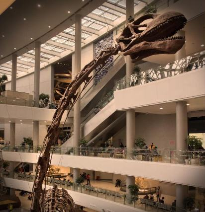
250,000 specimens and dinosaur skeletons in a sunken atrium — the best rainy-Sunday plan in the city. Bring your student card: it takes the ticket from 30 to 12 RMB. Shanghai museums are reserved through their WeChat account, so book before you travel across town.
The skyline you came for, seen from inside it. Go up 30 to 60 minutes before sunset and one ticket buys you the daylight view, the sunset and the city lighting up. Skip the Oriental Pearl's capsule — longer queues, less view.
The cheap version, and its catch: ride the lift up to a bar near the top of one of the towers — the Park Hyatt, on the 87th floor of the Jin Mao, is the classic. The ride costs nothing and a drink costs less than a ticket. The catch: once you sit down you hardly see anything — the windows are tall and the view belongs to whoever is standing. Worth a drink, not a replacement for the deck.
Everything worth a Saturday, and how far each one is from the gate. Two of them — Jing'an and the Concession — are a straight run down Line 7 with no change at all.
Line 7 puts you in Jing'an in 28 minutes without a change. The real question was never where to go out — it is how to get home.
Closest to campus
Wuding Lu / Yanping Lu 武定路 · 延平路→ open in mapsChangping Rd · direct
~35 min, no transfer · beers 40–60 RMB, cocktails 60–90 RMB
The nearest proper bar neighbourhood to Baoshan: taprooms, cocktail bars, bistros. Ideal on a weeknight — leave at 23:00 and you still catch the last metro.
1123 Yan'an Middle Rd, 160 m from Jing'an Temple exit 11 · 21:00–05:00 · entry 0–300 RMB depending on the night and the promoter
The EDM/hip-hop mega-club every exchange student does once, and groups of international students often get in free through WeChat promoters. It has moved: older guides still send you to 158 Julu Rd, and that room is gone along with its techno floor, 44KW — use the link.
Fuxing Park, ~1 h away · one pass for 7 clubs, one free drink in each
Six floors, seven clubs under one roof: one ticket and you move from room to room all night (free-flow drinks at FRiENDS on the 5th). The most efficient « let's try everything » night in Shanghai — perfect for a group on a Friday.
The Fudan–Tongji student quarter, and where a lot of Shanghai's international students now end up. Mexican bar and grill by day, pub and dancefloor after 22:00, cheap all evening. Across town from Baoshan, so make a night of it.
843 Weihai Rd, Jing'an — 420 m from West Nanjing Rd · 18:00–02:00, 03:00 Fri–Sat · usually free, ~60 RMB a head
The cheap, unpretentious end of the club scene and a Shanghai institution: house, techno, disco and old-school hip-hop in a room the size of a flat, free most nights, Chinese and international crowds mixed together. Use the link or search DADA in Amap — half the internet still gives the old Xingfu Rd address, and that room is shut.
Elevator 电梯俱乐部
Xujiahui · entry 60–100 RMB
The gateway to the underground scene: a small techno club with no bottle-service nonsense. Same world, both still going: C's→ open in maps, a graffitied cellar with some of the cheapest drinks in the city, and Lucca 390→ open in maps, the main LGBT club. The scene moves fast — follow SmartShanghai for what is on.
Wednesday = ladies' night 女士之夜
Bars in Jing'an and the Concession
A long-running Shanghai tradition: free entry and free drinks for women for part of the night. The venues rotate every season — SmartShanghai keeps the current list. Basic rule: keep an eye on your drink.
The part of the evening nobody plans, and the one that decides whether the night was a good idea. Settle it before you leave, not at 1 a.m. on a platform.
The last metro: what matters is the last Line 7 train towards Meilan Lake 美兰湖方向 — around 23:00–23:15 from Jing'an Temple Sunday to Thursday, extended to about 00:30 on Friday and Saturday. Check in the Metro 大都会 app or Amap.
Missed it: a Didi from downtown to campus takes 30–45 minutes at night and costs 60–100 RMB. Split four ways that's 20 RMB each — always go home as a group.
Or the opposite: clubs peak between midnight and 3:00 — plenty of people stay until the first metro (~5:30–6:00), with a noodle or McDonald's stop in between.
ID: a clear photo of your passport plus your student card is enough for a night out — big clubs sometimes check, and you should be able to identify yourself if the police do. The passport itself is safer at home.
Your building: living in a flat means no curfew — but check whether your compound locks its gate at night, and make sure you can get in before your first big night out, not at 2 a.m.
The promoter system, and it is a real one: big clubs pay promoters to bring groups of international students in, so a message in the right WeChat group gets you free entry, often a table and a bottle with it. It is how most of the year above you goes out, there is no catch and nothing obliges you to buy anything — ask them to add you in your first week.
And four ways a night goes wrong
Very cheap spirits are cheap for a reason. At the bottom end of the market — 20 RMB cocktails, buckets, street kiosks — what is in the bottle is often not what the label says, and counterfeit spirits put people in hospital every year. If the price looks impossible, drink bottled beer instead, opened in front of you.
Drugs: simply don't. China is in a different league from Europe here. Police do walk into clubs and can test everyone in the room on the spot, foreigners first, and a positive test on its own is enough — detention, then deportation, with your semester over. If an evening starts heading that way, leave it.
Nobody goes home alone. Decide how the group gets back before you go out. Share your Didi trip in the app, keep an eye on each other's glasses, and never leave someone behind with people you met that night. Shanghai is genuinely one of the safer big cities to walk across at 3 a.m. — which is a reason to relax, not a reason to split up.
The bar scam. A friendly stranger on Nanjing Rd or outside a metro exit suggests a bar or a teahouse they know; the bill arrives at several thousand RMB and the door stays shut until it is paid. Pick the venue yourself, and pay as you go rather than opening a tab.
Shanghai sits at the centre of the best rail network in the world. Half of eastern China is a weekend away, and a good part of it is an afternoon. The trips below are the easy ones, not the only ones — search Trip.com携程 for anywhere that catches your eye and it books the train, the bed and the entrance ticket in one place.
How to book. The official 12306 app works in English, registers you with your passport, takes a Visa or Mastercard (or Alipay), and charges no booking fee. There is no ticket window and no paper ticket: you tap your passport at the orange gate and walk to the platform. Seats open 15 days ahead and the good trains sell out — book the return leg at the same time as the outward one.
An afternoon
Qibao 七宝Line 9
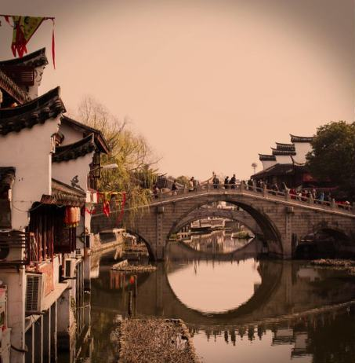
A canal town inside the city: one old street, a temple, stone bridges and a great deal of street food. Touristy and small — two hours is plenty — but it costs a metro ticket and it is the closest thing to a water town you can reach without leaving Shanghai.
A day
Suzhou 苏州from ~40 RMB25 min by train
Classical gardens and canals, close enough that people go for lunch. The Humble Administrator's Garden is the famous one and is heaving; the Lingering Garden and Tiger Hill虎丘 make far better mornings. Leave early, come back the same night.
A weekend
Hangzhou 杭州~1 h by train
Hire a bike and ride the whole way round West Lake, then climb into the tea terraces at Longjing to the south. 上有天堂，下有苏杭 — heaven above, Suzhou and Hangzhou below.
Nanjing 南京~1 h 30
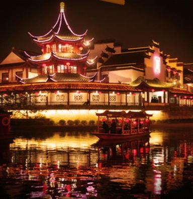
The old southern capital: the Ming tombs and Sun Yat-sen's mausoleum on Purple Mountain, the city wall, the Confucius temple quarter after dark, and the Nanjing Massacre Memorial — hard going, and worth it.
The Shengsi islands 嵊泗列岛bus + ferry
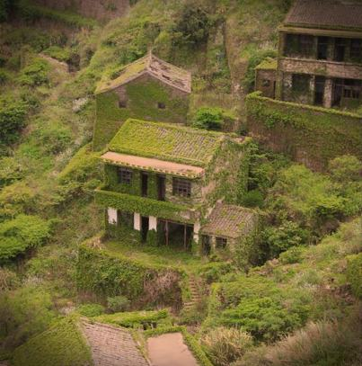
Beaches and cheap seafood two hours out to sea, and on Shengshan island the abandoned fishing village of Houtouwan后头湾, swallowed whole by greenery. Buy the combined bus-and-ferry ticket at Nanpu Bridge station; boats are few and go fast.
Further afield
Beijing is four and a half hours by train; Xi'an and the terracotta army, Chengdu and the pandas, Yunnan, Zhangjiajie, Guilin are holidays rather than weekends. Plan those around Golden Week and the winter break — and the AFEC guide covers the rest of China properly.
UTSEUS tip: the long weekends cluster in the autumn — Mid-Autumn in late September and Golden Week from 1 to 7 October — and the entire country travels then. Book those two the day seats open, or stay put and enjoy an empty Shanghai.
Three documents that were too dense to reproduce here without becoming unreadable. Click a preview to enlarge it for a glance; the title opens the full-size file in your browser. Each is also linked from the chapter it belongs to.
All 111 SHU clubs in English, sorted into five sections, each with its QQ group number. Open it on a computer if you can — it filters and sorts. Joining needs a QQ account, and QQ needs a Chinese number.
The university's own plan, with every building numbered and indexed. Ours keeps only what you need day to day; open this one when someone tells you to meet at building J1.
The official poster: every canteen, floor by floor, with breakfast, lunch and dinner times. Hours shift slightly between terms and this is the version that gets updated.
Something missing? If the university publishes a document you think belongs here — a calendar, a form, a poster nobody could read — send it to Anicet on WeChat (aneysait) and it goes into the next version of this guide.
The last page, so you can find it by flipping to the back. Save the three numbers in your phone now, before you need them.
Emergency numbers
110 Police
120 Ambulance (chargeable)
119 Fire brigade
Operators rarely speak English. If you can, hand the phone to a Chinese speaker — or send your location in WeChat to someone who can call for you.
Ill or hurt — the three steps
Minor — a cold, a sprain, a prescription: a pharmacy药店. Show them the problem, buy it over the counter, done; out of hours Meituan delivers in about 30 minutes (the daily-life chapter). More than that — the campus clinic校医院 at the north gate, in Chinese, and the only route to being reimbursed (chapter VII). Serious — a fracture, a fever that will not break, anything frightening — the hospital below, in English, day or night.
And message Kay or Anicet (Chapter I) whenever you are hurt or properly ill — early, not once it is bad. They will help you get seen and deal with the paperwork afterwards.
Shanghai General Hospital — International Medical Care Center 上海市第一人民医院国际医疗保健中心→ open in maps
86 Wujin Road, Hongkou · floors 6, 9 and 10 · open 24 hours
The international wing of a major public hospital, staffed in English (also Japanese and Russian), so you can describe your symptoms properly instead of miming them — which is the whole difference when something is actually wrong.
24-hour assistance: +86 21 6324 3852 · +86 21 6324 0090 ext. 6413 · imcc@shgh.cn. In Hongkou, just south of Baoshan — 30 to 40 minutes by Didi, and the closest English-speaking hospital care you have.
There is a second branch in the south of the city, at 650 Xin Song Jiang Road (24 h: +86 21 3779 8630), but from Baoshan the Wujin Road one is the one you want.
Two things to know before you need it: an international centre bills more than a normal Chinese ward, so keep every receipt and check what your insurance covers — and going straight there rather than through the campus clinic may cost you the university reimbursement. When it is serious, go anyway and sort the paperwork out afterwards.
Consulate
Consulate General of France in Shanghai — Soho Zhongshan Plaza, 1055 West Zhongshan Road, building A, 18th floor. Consular emergencies: +86 21 6103 2200. Students of other nationalities: look up your own consulate in Shanghai before you travel.
And in any case, tell someone from the team. Charly for visas and registration, Kay and Anicet for housing, Kay for academic trouble, Anicet for everything else, Fabien if it is serious (Chapter I). You are not expected to sort out a problem in a foreign country on your own.
Four months, one metro line, and a city that keeps producing streets nobody told you about. Eat at the canteen you have not tried, say yes to the club that meets on a Tuesday, and get on Line 7 more often than you think you need to.
Written by Anicet Barrios, Head Student Coordinator at UTSEUS. Corrections and new addresses are very welcome — on WeChat, obviously (Chapter I).
Edition of August 2026, for the autumn semester 2026–2027. Ask on WeChat whether a newer one exists before you rely on a price or an opening time.